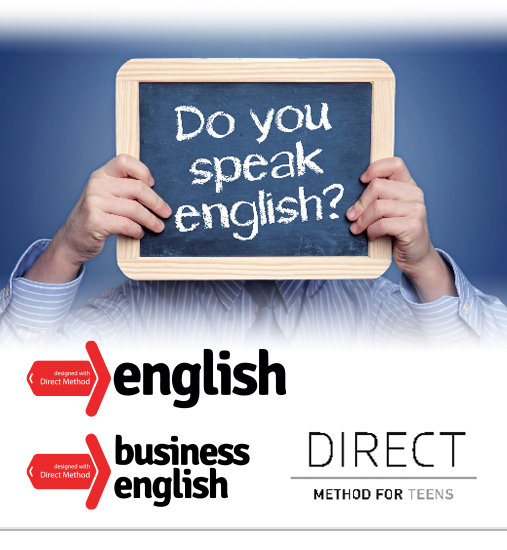
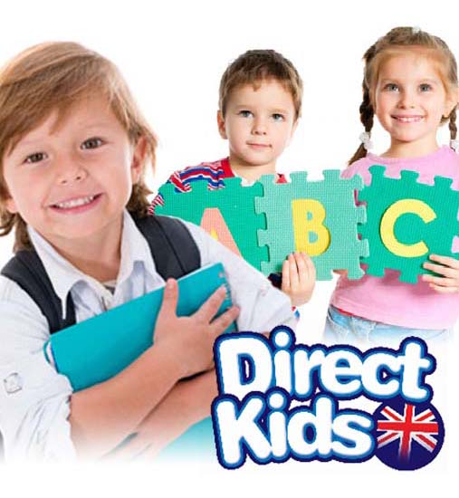

Język angielski
Zapraszam dzieci,młodzież oraz osoby dorosłe.
Prowadzimy kursy dla dzieci,mlodzieży i dorosłych. Uczymy Metodą Komunikatywną (Communicative Approach) oraz Direct Method for English.
Direct Method: DLA DOROSŁYCH I MŁODZIEŻY
Podręczniki: General English dla osób dorosłych, Get Down to Business- Business English oraz Teens English dla młodzieży 12-19 lat.
Można powiedzieć, że głównym celem metody bezpośredniej jest nauczanie umiejętności komunikacji w języku obcym, poprzez minimalizowanie użycia języka ojczystego w czasie lekcji i wykształcenie pewnych odruchów językowych. To prowadzi do myślenia w języku, którego się chcemy nauczyć, a dzięki temu łatwości w posługiwaniu się nim w praktyce.
Metoda bezpośrednia kładzie duży nacisk na praktykę i pracę ustną - słuchanie i mówienie. Około 80% lekcji to praca ustna z lektorem, polegająca na kontrolowanym dialogu, w którym lektor zadaje pytania w oparciu o wprowadzone wcześniej słownictwo oraz zagadnienia gramatyczne. W ten sposób nowy materiał jest ćwiczony zarówno w praktyce jak i w odpowiednim kontekście.
Zajęcia językowe metodą bezpośrednią odbywają się prawie wyłącznie w języku obcym.
Języka obcego uczymy się podobnie, jak dziecko uczące się swojego pierwszego języka. Słuchacz najpierw słyszy słowa, następnie wypowiada je imitując wymowę nauczyciela, a dopiero potem poznaje pisownię: czyta i pisze.
Język angielski dla dzieci
KIDS English
Dla dzieci w wieku 6-13 lat Direct Kids
Dla dzieci w wieku 3-7 lat This is English!
Zajęcia prowadzone z naszych podręczników są wyczekiwane przez dzieci z lekcji na lekcję, bo dzięki nim szybko uczą się porozumiewać po angielsku. Wiele radości przysparza im fakt, że w krótkim czasie potrafią rozmawiać w języku angielskim nie tylko w trakcie lekcji, ale też w różnych sytuacjach poza szkołą. Dużą satysfakcję mogą odczuwać także rodzice, którzy są dumni z tak szybkich postępów swoich pociech.
W ramach zajęć angielskiego dla dzieci oferujemy również autorską metodę Arts and Crafts English, która polega na założeniach ostatnich badan naukowych, które wskazują, że kreatywność manualna niezwykle wspomaga uczenie się języków obcych, dzięki synchronizacji obu półkul mózgowych.
2 razy w roku razem z dziećmi przygotujemy teatrzyki dla rodziców. DRAMA English jest uznana na całym świecie metodą, która stymuluje dzieci oraz je bardz motywuje.
A wszystko to przeplatane jest odpowiednio dozowanymi grami aktywizującymi i motywującymi, które zapobiegają znużeniu oraz wspomagają zapamiętywanie nowych partii materiału.
